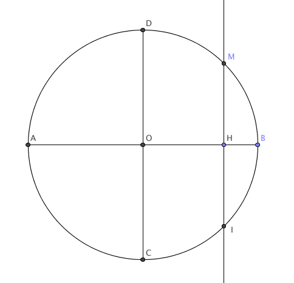

Ressources mathématiques > Base de données d'exercices > Exercices de dénombrement - probabilités - statistiques >
Exercices corrigés - Variables aléatoires à densité : théorie générale
Etude de densité
Enoncé 
Parmi les fonctions suivantes définies sur $\mathbb R$, déterminer lesquelles sont la densité d'une variable aléatoire à densité. Calculer le cas échéant leur fonction de répartition et préciser si elles admettent une espérance.
$$\begin{array}{lll}
\textbf{1. }f_1(x)=\left\{\begin{array}{ll}
\cos x&\textrm{ si }x\in [0,\pi/2]\\
0&\textrm{ sinon.}
\end{array}\right.
&\quad\quad&
\textbf{2. }f_2(x)=\frac{1}{1+x^2},\ x\in\mathbb R\\
\textbf{3. }f_3(x)=\frac{e^x}{(e^x+1)^2},\ x\in\mathbb R
&\quad\quad&
\textbf{4. }f_4(x)=\left\{
\begin{array}{ll}
1+x&\textrm{ si }x\in [-1,0]\\
1-x&\textrm{ si }x\in [0,1]\\
0&\textrm{ sinon}
\end{array}\right.\\
\textbf{5. }f_5(x)=\left\{
\begin{array}{ll}
\frac{1}{|x|^3}&\textrm{ si }|x|>1\\
0&\textrm{ sinon}
\end{array}\right.
&\quad\quad&
\textbf{6. }f_6(x)=\sin x+1,\ x\in\mathbb R.
\end{array}$$

Enoncé
Soit $f$ la fonction définie sur $\mathbb R$ par $f(x)=\frac{a}{1+x^2}$. Déterminer $a$ pour que $f$ soit la densité de probabilité d'une variable aléatoire $X$. Déterminer la fonction de répartition de $X$. $X$ admet-elle une espérance?
Enoncé
Soit la fonction $f$ définie sur $\mathbb R$ par $f(x)=\frac{a}{x\sqrt x}$ si $x\geq 1$ et $f(x)=0$ sinon.
- Déterminer le réel $a$ pour que $f$ soit une densité de probabilité d'une certaine variable aléatoire $X$.
- Déterminer la fonction de répartition associée à $X$.
- $X$ admet-elle une espérance? Si oui, la déterminer.
Enoncé
Dans une station-service, la demande hebdomadaire en essence, en milliers de litres,
est une variable aléatoire $X$ de densité $f(x)=c(1-x)^4\mathbf 1_{[0,1]}$.
- Déterminer $c$.
- La station est réapprovisionnée chaque lundi à 20h. Quelle doit être la capacité du réservoir d'essence pour que la probabilité d'épuiser ce réservoir soit inférieure à $10^{-5}$?
Enoncé
On considère une variable aléatoire $X$ dont la densité est donnée par
$$f(x)=ce^{-|x|}.$$
- Calculer $c$.
- Démontrer que $X$ admet des moments de tout ordre. Les calculer.
Enoncé
On considère le cercle de centre $O$ et de rayon 1. On s'intéresse à la longueur d'une corde de ce cercle perpendiculaire à la droite $(AB)$ lorsque cette corde est choisie "au hasard".

Le plan est muni du repère $(O,\overrightarrow{OA}, \overrightarrow{OD})$.
- Première méthode. On considère que la corde aléatoire est déterminée par son milieu $H$ qui appartient au diamètre $[AB]$. On appelle $X$ l'abscisse de ce milieu et on fait l'hypothèse que $X$ suit une loi uniforme sur $[-1,1]$.
- Calculer la longueur $L_1$ de la corde en fonction de $X$.
- Par des considérations d'aires et sans chercher à trouver une primitive, calculer $$\int_{-1}^1\sqrt{1-x^2}\,dx\ .$$
- En déduire la valeur moyenne de la fonction $x\mapsto\sqrt{1-x^2}$ sur l'intervalle $[-1,1]$, puis l'espérance de $L_1$.
- Deuxième méthode. On considère que la corde aléatoire est déterminée par le choix d'une de ses extrémités $M$ sur le demi-cercle $\overset{\frown}{ADB}$. On appelle $T$ une mesure de l'angle orienté $\widehat{BOM}$ et on fait l'hypothèse que $T$ suit une loi uniforme sur $[0,\pi]$.
- Calculer la longueur $L_2$ de la corde en fonction de $T$
- En déduire l'espérance de $L_2$.
- Conclusion. A la lumière de ces deux méthodes, quel commentaire peut-on faire concernant l'espérance de la longueur d'une corde aléatoire ?
- Épilogue : une troisième méthode.
- Montrer que pour tout réel $\ell\in[0,2]$, il existe une unique corde orthogonale à $[AB]$, dont une extrémité $M$ est sur le quart de cercle $\overset{\frown}{BD}$ et dont la longueur vaut $\ell$. Il en est de même si l'extrémité $M$ se situe sur le quart de cercle $\overset{\frown}{DA}$.
On tire alors au hasard une corde orthogonale à $[AB]$ de la façon suivante : on lance d'abord une pièce équilibrée. Si elle tombe sur pile, on décide que l'extrémité $M$ se situe sur le quart de cercle $\overset{\frown}{BD}$ et si elle tombe sur face, on décide que l'extrémité $M$ se situe sur le quart de cercle $\overset{\frown}{DA}$. Une fois cette décision prise, on positionne la corde en tirant au hasard sa longueur de façon uniforme sur l'intervalle $[0,2]$. - Quelle est l'espérance de la longueur $L_3$ de la corde ainsi tirée au hasard ?
- Montrer que pour tout réel $\ell\in[0,2]$, il existe une unique corde orthogonale à $[AB]$, dont une extrémité $M$ est sur le quart de cercle $\overset{\frown}{BD}$ et dont la longueur vaut $\ell$. Il en est de même si l'extrémité $M$ se situe sur le quart de cercle $\overset{\frown}{DA}$.
Fonction de variables aléatoires
Exercice 7 - Étude d'une densité et d'une fonction de variable aléatoire ♡ [Signaler une erreur] [Ajouter à ma feuille d'exos]
Enoncé
Soit la fonction $f$ définie sur $\mathbb R$ par
$f(x)=e^x$ si $x<0$ et $0$ sinon.
- Montrer que $f$ est une densité de probabilité d’une certaine variable aléatoire, que l’on notera $X$
- Déterminer la fonction de répartition de $X$.
- Montrer que $X$ admet une espérance et la calculer.
- On pose $Y=2X+1$.
- Déterminer la fonction de répartition de $Y$.
- Démontrer que $Y$ est une variable aléatoire à densité, et déterminer la densité de $Y$.
- Reprendre les mêmes questions avec $Y=X^2$.
Enoncé
Soit $f$ la fonction définie sur $\mtr$ par :
$$f(x)=\left\{
\begin{array}{ll}
a.3^{-x}&\textrm{si }x>0\\
a.3^x&\textrm{si }x<0.
\end{array}\right.$$
- Déterminer $a$ pour que $f$ soit une densité de probabilité.
- Soit $X$ une variable aléatoire admettant $f$ pour densité. Déterminer la fonction de répartition de $X$. Montrer que $X$ admet une espérance $E(X)$ et la calculer.
- On pose $Y=3^X$. Déterminer la fonction de répartition de $Y$. $Y$ admet-elle une espérance?
Enoncé
Soit $f$ la fonction définie par
$$f(x)=xe^{-x^2/2}\mathbf 1_{[0,+\infty[}(x).$$
- Justifier que $f$ est une densité de probabilité.
- Soit $X$ une variable aléatoire de densité $f$. On pose $Y=X^2.$ Reconnaître la loi de $Y.$
Enoncé
Soient $m,\sigma$ deux réels. On dit que $X$ suit une loi log-normale de paramètres $(m,\sigma^2)$ si $Y=\ln X$ suit une loi normale
$\mathcal N(m,\sigma^2)$. On supposera dans la suite $m=0$ et $\sigma=1$.
- Exprimer la fonction de répartition de $X$ à l'aide de la fonction de répartition $\phi$ de la loi normale centrée réduite.
- Calculer sa densité.
- Démontrer que $E(X)=\sqrt e$.
Enoncé
Soit $f$ la fonction de $\mtr$ dans $\mtr$ définie par
$$f(x)=\frac{e^{-x}}{(1+e^{-x})^2}.$$
- Montrer que $f$ est une densité de probabilité. Déterminer la fonction de répartition d'une variable aléatoire $X$ ayant $f$ pour densité.
- Soit $\varphi$ la fonction de $\mtr$ dans $\mtr$ définie par : $$\varphi(x)=\frac{e^x-1}{e^x+1}.$$ Etudier les variations de $\varphi$. Montrer que $\varphi$ réalise une bijection de $\mtr$ sur $]-1,1[$, et déterminer sa bijection réciproque.
- On définit une variable aléatoire $Y$ par : $$Y=\varphi(X)=\frac{e^X-1}{e^X+1}.$$ Déterminer la fonction de répartition et une densité de $Y$.
Exercice 12 - Un moyen de simuler la loi exponentielle ♡ [Signaler une erreur] [Ajouter à ma feuille d'exos]
Enoncé
Soit $X$ une variable aléatoire suivant une loi uniforme $\mathcal U([0,1])$. Déterminer la loi de $T=-\frac 1\lambda\ln(1-X)$, où $\lambda>0$. En déduire un algorithme permettant de simuler la loi exponentielle de paramètre $5$.
Enoncé
Soit $f$ la fonction définie sur $\mathbb R$ par $f(x)=\frac{1}{2(1+|x|)^2}$.
- Démontrer que $f$ est la densité de probabilité d'une variable aléatoire $X$. On note $F$ sa fonction de répartition (qu'on ne demande pas de calculer).
- On considère la variable aléatoire $Y=\ln(1+|X|)$ et on note $G$ sa fonction de répartition. Exprimer $G$ en fonction de $F$.
- En déduire que $Y$ admet une densité que l'on calculera.
- Reconnaitre la loi de $Y$.
Exercices théoriques
Exercice 14 - Calculer l'espérance grâce à la fonction de répartition ♡ [Signaler une erreur] [Ajouter à ma feuille d'exos]
Enoncé
Soit $X$ une variable aléatoire positive admettant une densité $f$. On suppose que $X$ admet une espérance finie. On note $F$ la fonction de répartition de $X$. Démontrer que
$$E(X)=\int_0^{+\infty}\big(1-F(x)\big)dx.$$
Enoncé
Si $X$ est une variable aléatoire admettant une densité $f$, on appelle entropie de $X$ la quantité suivante (si elle existe)
$$h(X)=-\int_{-\infty}^{+\infty}f(x)\ln f(x)dx.$$
- Démontrer que, pour tout $x>0$, $\ln x\leq x-1$.
- Calculer l'entropie d'une variable aléatoire uniforme.
- On suppose que $X\sim \mathcal N(m,\sigma^2)$. Démontrer que $$h(X)=\frac 12\left(1+\ln(2 \pi\sigma^2)\right).$$
- On souhaite prouver que, parmi les variables aléatoires de variance donnée, les lois normales sont celles qui admettent une entropie maximale. On fixe donc $Y$ une variable aléatoire centrée, de densité $f$ et de variance $\sigma^2$, admettant une entropie. On note $\varphi$ la densité de $\mathcal N(0,\sigma^2)$. On supposera dans la suite que la fonction $$x\mapsto f(x)\ln\frac{\varphi(x)}{f(x)}$$ est intégrable sur $\mathbb R$. Vérifier que $$h(Y)=\int_{\mathbb R}f(x)\ln\frac{\varphi(x)}{f(x)}dx-\int_{\mathbb R}f(x)\ln\varphi(x)dx.$$
- En déduire que $h(Y)\leq \frac 12\left(1+\ln(2 \pi\sigma^2)\right).$